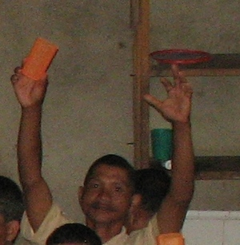

kayew 
/kayɔw/
v_rt.
“raise_up”
vt.
for someone (egkayew, agent, eg><ø-) to raise up something (egkayawen, theme, eg><en-) e.g., an arm or leg, or an instrument like a staff or bolo
Wrd.Gloss: raise_limb
Egkayaw rin e ka belad din.
He raised his arm.
Kayawa nud e ka belad nu.
Raise your arm.
Eng. raise; lift; extend
Online dict status: -
Usage level: M
Updated by: RJH,RJH
Last updated: 19/Dec/2007
"Kayawa" in text "Diye te iskwilaan"
"igpakayew" in healthbook "Natibbas te ugpit ka paa ni Biltu"
"kayawa" in healthbook "Natibbas te ugpit ka paa ni Biltu"
"egkayawen" in healthbook "Natibbas te ugpit ka paa ni Biltu"
"Kayawen" in song "Sasindeg ki diye ki Kristu"
"Kayawen" in song "Hisus egdayanen ku"
"Egkayawen" in song "Matulus ka Kristu"
This page last updated: 19/May/2012
Copyright © 2009-2010, Matigsalug Language Christian Association, Inc